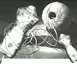

com início no próximo ano lectivo
2 0 0 0 - 2 0 0 1

The portuguese government spends a lot of money on our educational system every year. What should what should we expect from such investment? Better conditions? Better technological structures? nothing of this happens and the lack of security on portuguese edu servers are very common. The government should invest on security and should try to do something more besides kissing Bill Clinton´s ass. There are schools where there is only a computer with an internet connection for thousands of students, schools that ,in terms of technology, are still in the stone age. Do yourself a favour.. Wake up!
admin -> read the file /bakdafu to see how to fix this lame server
CURSOS
HOME PAGE